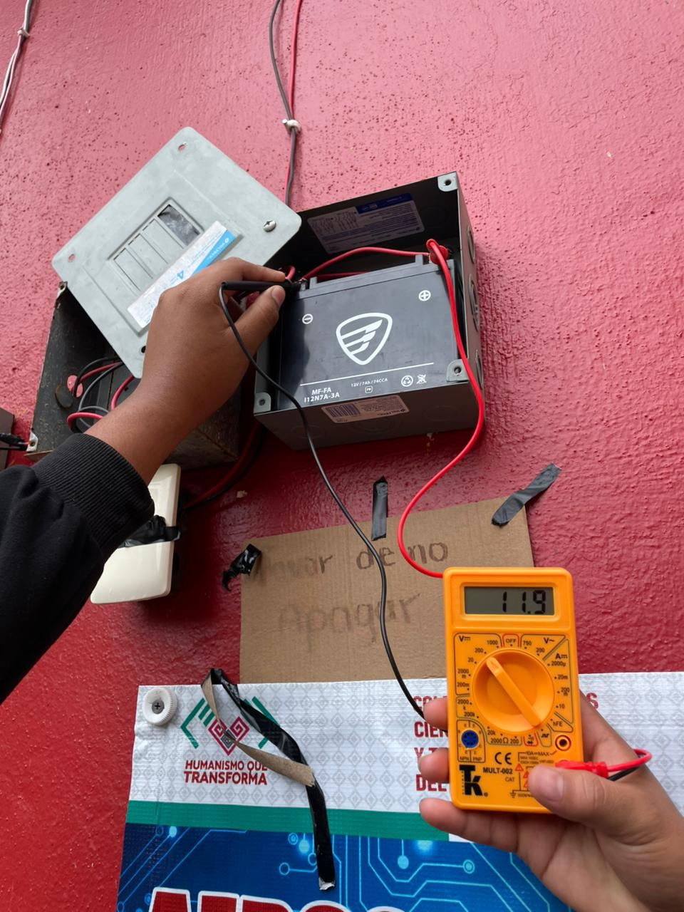

Objetivos estratejicos
Incrementar la presencia de Eolix en el mercado local y regional, posicionando la energía eólica de baja potencia como una alternativa viable y accesible para hogares, pequeñas empresas y espacios de bajo consumo.
Desarrollar e implementar soluciones tecnológicas innovadoras que mejoren la eficiencia en la generación, almacenamiento y aprovechamiento de la energía eólica.
Contribuir a la reducción de emisiones contaminantes mediante la promoción activa del uso de energías renovables, apoyando la conservación del medio ambiente.
Fortalecer la relación con nuestros clientes mediante un servicio confiable, atención de calidad y costos accesibles que respondan a sus necesidades energéticas.
Fomentar la educación y concientización sobre la importancia de las energías limpias, promoviendo una cultura de responsabilidad ambiental en la sociedad.
Establecer alianzas estratégicas con instituciones educativas, organizaciones y empresas para impulsar el desarrollo de proyectos sustentables.
Optimizar nuestros procesos internos para garantizar eficiencia operativa, calidad en el servicio y crecimiento sostenible de la empresa.
Consolidar a Eolix como una empresa reconocida por su innovación, compromiso ambiental, responsabilidad social y excelencia en el sector energético.
